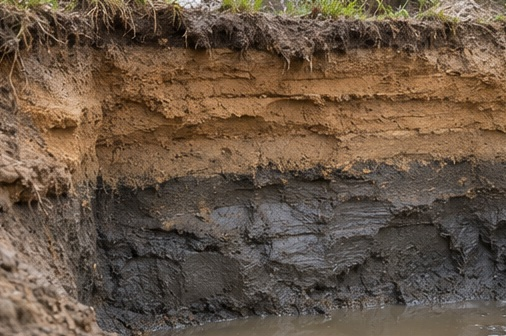

Jord og vand
Spændinger med dybden
Følg terrænlasten og jordens egenvægt ned gennem to jordlag. Flyt grundvandsspejlet og ændr den kapillære stighøjde for at se, hvordan poretrykket påvirker kornskelettet.
Indstillinger
I hvert lag skal den vandmættede rumvægt være større end rumvægten i den umættede zone. Skyderne begrænser hinanden med mindst 0,5 kN/m³ forskel.
Principskitse og resultater
Symboler og enheder
- lodret totalspænding (kPa)
- lodret effektiv spænding (kPa)
- poretryk (kPa)
- jævnt fordelt terrænlast (kPa)
- dybde under terræn (m)
- grundvandsspejlets dybde (m). GVS markerer selve spejlet i skitsen.
- jordens rumvægt i delinterval i (kN/m³)
- tykkelsen af delinterval i over aflæsningspunktet (m)
- indeks for delinterval mellem terræn, laggrænser, KVS og aflæsningsdybde
- vandets rumvægt, sat til 10 kN/m³
- kapillær stighøjde (m), målt op fra GVS i et frit jordprofil
- dybden til kapillarvandsspejlet (m). KVS markerer toppen af den vandmættede zone.
- vandmættet rumvægt i kapillarzonen og under GVS (kN/m³)
- jordens rumvægt (kN/m³). Skyderen for γ over KVS gælder den umættede zone.
- kornmaterialets relative densitet i forhold til vand (dimensionsløs)
- poretal, forholdet mellem porevolumen og kornvolumen (dimensionsløst)
- mætningsgrad, andel af porevolumen fyldt med vand (0 til 1)
- vandindhold, vandets vægt divideret med kornenes vægt (som decimaltal i formlen)
- kornstørrelsen ved 10 % gennemfald på kornkurven
Vis beregningen for hvert dellag
Ligninger
Totalspænding
Kapillarvandsspejlets dybde
Poretryk i den vandmættede zone
Poretryk over kapillarvandsspejlet i modellen
Effektiv spænding
Undersøg selv
Hold grundvandsspejlet fast, og øg den kapillære stighøjde. Flyt aflæsningsdybden ind i kapillarzonen. Hvorfor er den effektive spænding større end totalspændingen her?
Se forklaringen
Poretrykket er negativt mellem KVS og GVS. Når det trækkes fra totalspændingen, bliver den effektive spænding større. Rumvægten skifter ved KVS, fordi jorden er vandmættet allerede fra denne dybde.
Hvad bestemmer den kapillære stighøjde?
Små porer giver større stighøjde. Porestørrelsen afhænger af kornstørrelse og poretal. Lærebogen angiver tilnærmelsen hc d10 e ≈ konstant. Konstanten afhænger blandt andet af kornform og gradering og ligger typisk mellem 10 og 50 mm² med længder i mm. Fin jord kan derfor have et kapillarvandsspejl ved terræn, selv med GVS flere meter nede.
Forudsætninger
Vandret terræn, jævnt fordelt terrænlast og stillestående grundvand. Øvelsen bruger én kapillær stighøjde for hele profilen. Kapillarzonen afskæres ved terræn. Over KVS sættes poretrykket til nul som en forenkling. Porevinkelvand og overgangen i den umættede jord er udeladt.

Sådan beregnes rumvægten for sand og ler
Rumvægten er jordens vægt pr. rumfang, inklusive vandet i porerne. Begge formler kan bruges for begge jordarter. Poretal er et praktisk udgangspunkt for sand, mens vandindhold ofte er udgangspunktet for ler.
Sand · beregning ud fra poretal
Ler · beregning ud fra vandindhold
Sæt mætningsgraden til 1 i begge formler for vandmættet jord. For tørt sand sættes mætningsgraden til 0 i poretalsformlen. Vælg rumvægten for den umættede zone ud fra dens vandindhold eller mætningsgrad. I kapillarzonen bruges den vandmættede rumvægt, selv om zonen ligger over GVS.
Læs videre i lærebogen
Geoteknik, 3. udgave
Kapitel 2 · Spændinger i jord, § 2.1, s. 59–66, og § 2.2, s. 67–72. Kapitel 1 · Klassifikation af jord, § 1.3, s. 32–34.